Hvad er det
Ingeniøren er et program på din pc. Den læser data fra spillet og taler til dig gennem headsettet: den advarer dig om hurtigere biler, siger hvornår du skal i pit, hvad der skal skiftes ved pitstoppet, og hvor du taber tid. Den svarer på spørgsmål med stemmen – hold knappen på rattet inde, tal, slip.
Pit Wall er en webside (pc eller telefon). Hele holdet ser live bilens status, rivaler, vejr og stint-rækkefølgen og kan sende køreren beskeder, som ingeniøren læser op.
Det virker på alle baner, med alle biler og klasser i Le Mans Ultimate og Assetto Corsa. Du kan køre alene (Solo-tilstand) eller som hold.
Det skal du bruge
- Windows 10 eller 11 og Le Mans Ultimate eller Assetto Corsa (Steam; til Assetto Corsa anbefales Custom Shaders Patch – afsnittet Assetto Corsa).
- Et headset med mikrofon og en ledig knap på rattet (eller en tast).
- Internet (stemmen, talegenkendelsen og Pit Wall virker online).
- En gratis Groq-nøgle – uden den virker AI'en ikke (bedre talegenkendelse, AI-svar, oversættelse af mindre almindelige beskeder); sådan får du den: AI.
Installation (2 minutter)
- Hent installationsprogrammet
PitWallCrew_Setup_….exefra FR Mods' opslag på Patreon (offentligt opslag – gratis demo; den fulde version låser du op i appen med Log ind med Patreon – den henter sig selv, og dine indstillinger bliver). - Kør den hentede fil. Installationsprogrammet har endnu ingen digital signatur, så Windows kan vise »Windows beskyttede din pc« – klik Flere oplysninger → Kør alligevel.
- Vælg sprog i installationsprogrammet (engelsk, polsk, tysk eller fransk; dansk vælges bagefter i appen: Lyd og sprog → Język / Language), derefter OK, Næste og Installer. Installationen tager cirka et minut, henter intet (Python er med) og kræver ikke administratorrettigheder.
Programmet og dine data havner i
Dokumenter\Pit Wall Crew. Du kan fravælge genvejene til Pit Wall Crew på skrivebordet og i Start-menuen. Til sidst vælger du, om appen, stemmevejledningen og siden med den fulde version på Patreon skal startes, og klikker Udfør. - Appen åbner med vinduet Første skridt ved siden af – gå det igennem i rækkefølge (hvert punkt har en Åbn-knap):
- Hold: øverst Opret et nyt hold… (første person) eller holdets kode og adgangskode fra holdkammeraterne; derefter dit navn – et nyt navn føjes til holdets kørere, når du gemmer; kører du alene – Solo-tilstand.
- Mikrofon og knap: vælg mikrofonen (bjælken bevæger sig, når du taler), klik Indstil: tryk på knappen… og tryk på knappen på rattet.
- Lyd og sprog: vælg ingeniørens stemme og klik ▶ Lyt.
- Groq-nøgle (gratis, til AI'en): sådan får du den → Avanceret → Din Groq-nøgle → Tjek nøgle.
- Patreon: på siden Ingeniør klik Log ind med Patreon – sådan får du opdateringer.
- Klik Gem og genstart ingeniørmodulet.
- I LMU én gang: Settings → Gameplay → Enable Plugins = ON (uden det kan programmet ikke se spillets data; Assetto Corsa: afsnittet Assetto Corsa). Kør ud på banen, hold knappen inde og spørg fx »hvor meget brændstof?«.
Gammel installation fra zip (INSTALL.bat)? Kør det nye installationsprogram. Hvis programmet var pakket ud i Dokumenter\Pit Wall Crew, bliver dine indstillinger automatisk.
Hvis det lå i en anden mappe, så kopiér config.toml og mappen data fra den gamle mappe til Dokumenter\Pit Wall Crew\Program (eller gå »Første skridt« igennem igen).
En ældre installation med en anden Python end 3.12 viser efter en opdatering en besked om at installere den med det nye installationsprogram.
Stemmevejledning (1–2 minutter): ved første start fører ingeniøren dig gennem 5 trin – radiotest, »hvor meget brændstof har jeg?«, »hvem er bagved?«, to korte tryk på knappen, »stille«. Du ser straks, om mikrofon og knap virker. Den starter kun, når en taleknap er sat op (eller du har trykket på den én gang), og mikrofonen giver signal; aldrig under et løb. Spring over: »spring vejledningen over« (eller fravælg den til sidst i installationen); igen: Hjælp → Manual → Stemmevejledning.
Afinstallation: Windows-indstillinger → Apps → Pit Wall Crew → Afinstaller (eller Start-menuen → Uninstall Pit Wall Crew). Det fjerner programmet; dine indstillinger og optagelser (config.toml, mapperne data og recordings i Dokumenter\Pit Wall Crew\Program) bliver – for at fjerne alt skal du bagefter slette mappen Dokumenter\Pit Wall Crew.
Appens vindue
Ikonet Pit Wall Crew åbner appen. Ingeniøren starter selv og begynder at tale, når du starter spillet og kører ud på banen. Skift tema ☾ Mørkt / ☀ Lyst nederst i venstre bjælke (med det samme, uden genstart). Omgangs- og sektortider er farvet som på Pit Wall: lilla – bedst i klassen, grøn – din bedste, gul – langsommere.
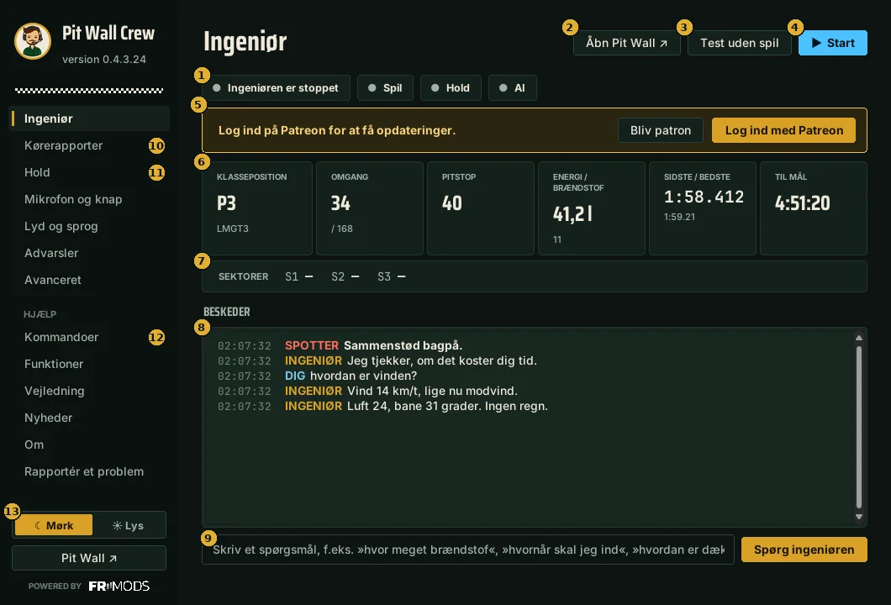
- Status: om ingeniøren kører, om den ser spillet (»Du kører« eller »du ser på«, når en holdkammerat kører), forbindelse til hold og AI. Grøn = OK.
- Åbn Pit Wall – holdets side i browseren, allerede forbundet til appens hold (uden at skrive adgangskode).
- Test uden spil – et simuleret løb. Tjek stemme, mikrofon og Pit Wall uden at starte LMU.
- Start / Stop ingeniøren.
- Patreon – log ind for at få opdateringer. Efter login er kun »Log ud af Patreon« tilbage.
- Nøgletal: placering, omgang, omgange til pitstop, energi eller brændstof, omgangstider, tid til slut.
- Sektorer: S1–S3-tider for sidste omgang og forskellen til din bedste omgang (i parentes den sektor, hvor du taber mest).
- Køremål: Bedste tid (standard) eller Løbstempo (eksperimentel funktion) – til endurance, når jævne tider og at spare dæk betyder mere end 100 %. Kørselsrapporten vurderer kørslen efter dette mål (med stemmen: »kører på tid« / »sparer på dækkene«). Med »Løbstempo« sammenligner ingeniøren ikke sving med din bedste omgang, mens du kører. Spørg »hvordan sparer jeg på dækkene?« for at få regler for den lange stint ud fra dine data.
- Stint og dæk (kun med Løbstempo): stintlængden i omgange (tomt = fuld tank, i løb fra planen) og hvor mange stints dækkene skal holde (1–3). Med stemmen: »stint på 14 omgange«, »dobbeltstint«. Rapporten viser så tempofaldet pr. omgang (fra 8 rene omgange) og kortet Prognose for dæksættet; »Siden sidst« sammenligner kun lignende ture (bane, blanding, startbrændstof, kører, dækalder) og nævner de oversprungne med årsag.
- Tekststørrelse (Indstillinger → Lyd og sprog): 100 / 110 / 125 % – større tekst i hele vinduet, efter genstart af vinduet.
- Beskeder – alt hvad ingeniøren har sagt, dine spørgsmål og holdets beskeder. Rød = akut.
- Spørgefelt – skriv et spørgsmål i stedet for at tale.
- Kørerapporter: rapporter efter stints og løb, også det aktuelle stint live (beskrivelse nedenfor under »Stint-opsummering«).
- Indstillinger – hold, mikrofon, stemme, advarsler (se nedenfor).
- Hjælp – kommandoer, funktioner, manual (også Første skridt), ændringer, om programmet og Rapportér et problem.
- ☾ Mørk / ☀ Lys: vinduestema. Pit Wall – som knap 2, fra alle appens sider.
Kørerapporter
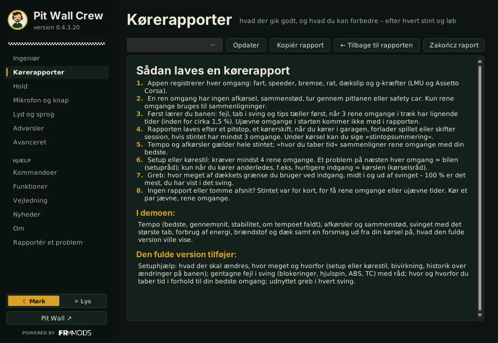
Indstillinger
Efter hver ændring klik Gem og genstart ingeniørmodulet (nederst til højre).
Hold
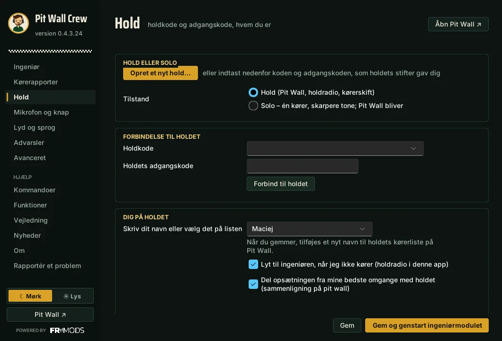
- Solo – du kører alene: intet andet at udfylde. Pit Wall virker stadig som din live-visning.
- Hold – én person klikker Opret et nyt hold… (navn og adgangskode) og får en holdkode på 6 tegn. De andre skriver koden og adgangskoden, klikker Forbind til holdet og vælger, hvem de er.
- Feltet Holdkode viser de hold, denne computer har været forbundet til (kun koder og navne, ingen adgangskoder). Vælg et, skriv det holds adgangskode og gem. Pit Wall i browseren husker også koder: ved login og på fanen Hold (»Andre hold på denne enhed«).
- Del kode og adgangskode kun privat – den, der kender dem, ser bilens status og kan skrive til køreren.
- Lyt til ingeniøren, når jeg ikke kører – mens en holdkammerat kører, hører du hans ingeniør (holdradio).
- Del opsætningen fra mine bedste omgange med holdet – opsætningen fra spillet sendes til holdets database sammen med din bedste omgang; pit wall viser forskelle i opsætningen på sammenligningskortet. Fjern fluebenet, hvis du ikke vil dele den.
- Omgange på denne computer (Avanceret) – programmet gemmer hver omgang på disken og sletter intet af sig selv; Slet ældre end … dage (du vælger antal dage, mindst 14). Omgange ældre end 14 dage henter pit wall herfra, når nogen vælger dem. Omgange kørt uden internet sendes, når forbindelsen er tilbage.
Mikrofon og knap
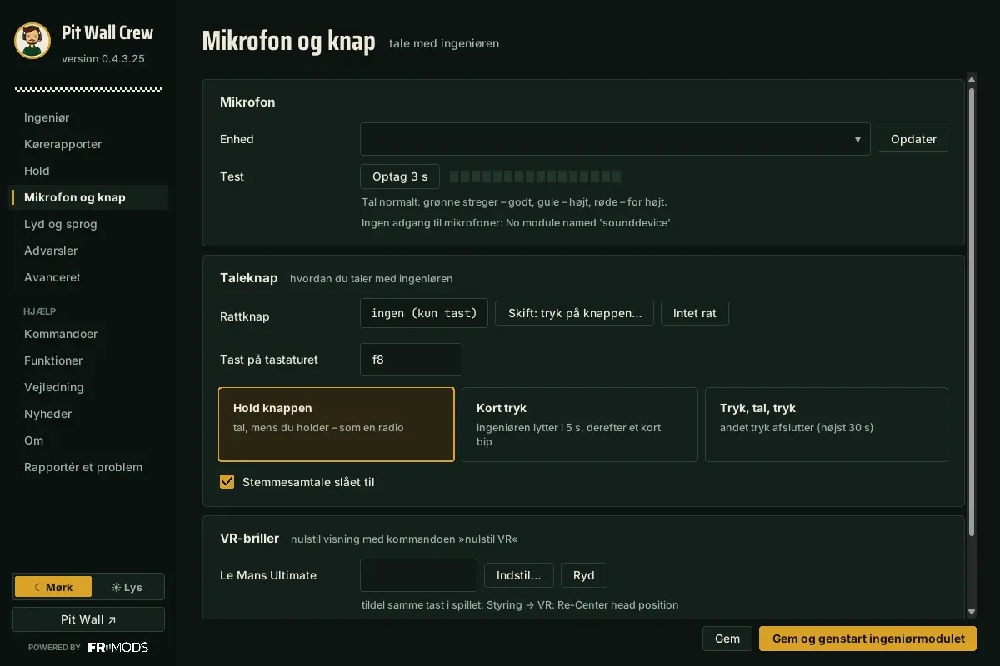
- Vælg mikrofonen og klik Test 3 s – sig noget og tjek, at niveauet bevæger sig.
- Indstil: tryk på knappen… og tryk på den knap på rattet, du vil tale med (enhver knap virker, også MOZA-knapper med numre over 32). En tast virker også. Virker knappen ikke i spillet, så indstil den igen.
- Tast til nulstilling af VR – ved kommandoen »nulstil VR« trykker programmet på denne tast (Indstil: tryk på en tast…). Tildel den samme i spillet (LMU: Styring → »VR: Re-Center head position«). En separat tast til Assetto Corsa – Ctrl+Mellemrum som standard; programmet trykker på tasten for det spil, du kører i.
Lyd og sprog
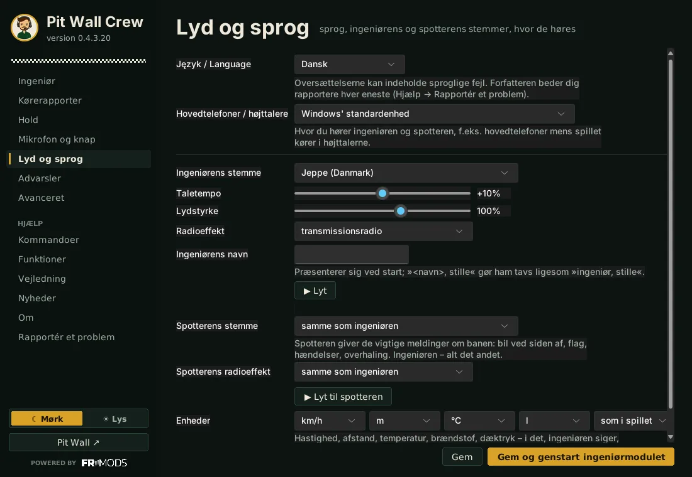
- Język / Language – helt øverst, altid også på engelsk, så det er nemt at finde.
- Hovedtelefoner / højttalere – den enhed, du hører ingeniøren og spotteren på, fx hovedtelefoner mens spillet kører på højttalerne.
- Ingeniørens stemme, hastighed, lydstyrke, radioeffekt og ingeniørens navn. ▶ Lyt afspiller en prøve.
- Giver du ham et navn (fx Mads), præsenterer han sig, og »Mads, stille« får ham til at tie.
- Spotterens stemme – en separat stemme til akutte meldinger om banen (bil ved siden af, flag, uheld, overhalinger); »samme som ingeniøren« = én stemme. Spotterens radioeffekt – separat fra ingeniøren (fx ren spotter, ingeniør over radio). ▶ Lyt til spotteren afspiller en prøve.
- Enheder – km/h eller mph, m eller ft, °C eller °F, l eller gallon, tryk som i spillet / bar / psi / kPa: sådan taler ingeniøren, sådan er rapporterne, og sådan viser pit wall data fra start (hver kan vælge sine egne i ⚙). Camber-grader ændres ikke.
Advarsler
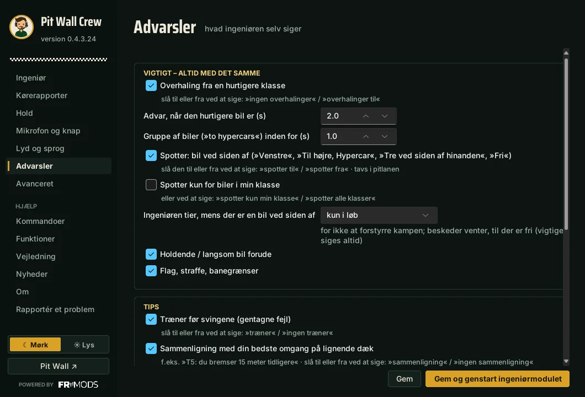
Det ingeniøren siger af sig selv: overhaling fra hurtigere klasser (og fra hvor mange sekunder), biler der holder stille, flag, coach før svingene, sammenligning med din bedste omgang, kommentarer efter overhalinger, opsætningstips, råd om brændstofbesparelse. Med stemmen: „ingen brændstofbesparelse“, „tal mindre“, „ingen råd“; ingeniøren svarer også på „hvordan slår jeg … fra?“. Coach, sammenligninger og tips starter, når dine omgangstider er stabile (3 rene omgange med ens tider) – ikke mens du lærer banen. I løb kan svingnumre ud over T1 afvige fra den rigtige bane, så ingeniøren siger »næste sving: …«. I løb kommer svingtips højst hver 3. omgang. Sving findes ud fra banens form (også hurtige sving), og på baner med tabel (Bahrain) nummereres de som på den rigtige bane. Han husker også de sidste 100 opsætningsændringer pr. bane og bil: en ændring, der gjorde dig langsommere, eller at fortryde en, der hjalp, foreslås ikke igen – heller ikke i rapporter – så rådene ikke kører i ring. Hvis du ændrer en indstilling i garagen modsat rådet (f.eks. ned i stedet for op), siger ingeniøren det med det samme. Den præcise baneform (et punkt hver 4. m) samles fra den første rene omgang på hver bane; i et team kommer den også på Pit Wall og til holdkammeraterne. I et team fastlægger den første kører på en bane svingene, og de andre henter dem – samme numre på Pit Wall og i rapporterne. Et knæk på langsiden taget fuld gas, med greb til overs, er ikke et sving. Coachen taler også om teknik: bremsen sluppet brat før indstyring, to opbremsninger, ratkorrektioner midt i svinget, tøven på speederen ved udgangen; ved gentagne blokeringer foreslår han at bremse med tre fjerdedele af kraften. Rapporten viser, hvornår du skal give et sving for at komme hurtigere ud af det næste. Undtagelse: Opsætningsråd også mens jeg lærer banen (eller med stemmen »opsætning nu«) – når opsætningen er så dårlig, at jævne omgange er svære. Pause mellem tips – mindste antal minutter mellem tips. Du kan slå dem alle til og fra med stemmen under kørsel (fx »ingen coach«). Dækkene stadig for kolde efter flere omgange og camber næsten på minimum – ingeniøren foreslår mere camber (LMU, AC med CSP). Efter udkørsel fra garagen (træning, kvalifikation) tjekker ingeniøren opsætningen: camber næsten på minimum, tryk eller frihøjde næsten på maksimum – én gang pr. opsætning. Hvor meget ingeniøren taler efter en omgang – Meget (alt på én gang), Normal (én bemærkning pr. omgang – standard) eller Lidt (én bemærkning hver 3. omgang). Opsætningsråd med en ekstra mulighed (»x eller y«) – fra: én ændring ad gangen. Setup-råd også i løbet – fra: i løbet kun køreråd (setup-råd i træning og kvalifikation). Advarsler, strategi og svar – altid med det samme.
Spotter: »Venstre«, »Til højre, Hypercar«, »Tre på linje« og hvilken side bilerne er på, »Fri« – altid til sidst, når der ikke længere er nogen ved siden af. »Spotter kun for biler i min klasse« springer andre klasser over. Stille i pitlanen, i kvalifikationen (privat i LMU) og i løb før starten. På startgriden siger ingeniøren, hvis rattet er drejet mere end 90°. Med stemmen: »spotter fra« / »spotter til«, »spotter kun min klasse« / »spotter alle klasser«.
Mens en bil er ved siden af, tier ingeniøren (også med spotteren slået fra), så du kan koncentrere dig om kampen – indstillingen Advarsler → Ingeniøren tier, når en bil er ved siden af: kun i løb (standard), altid eller aldrig. Sammenstød: et par sekunder efter et sammenstød siger ingeniøren »Jeg tjekker, om det koster dig tid«; efter to rene omgange siger han tabet pr. omgang, om topfarten er faldet, og om en reparation kan betale sig. Kender han ikke reparationstiden, siger han, op til hvor mange sekunder den kan betale sig (fx »En reparation på op til 45 sekunder kan betale sig, stop en længere«) – du kan stoppe reparationen i spillet. Du kan også sige: »reparation 38 sekunder«.
Avanceret
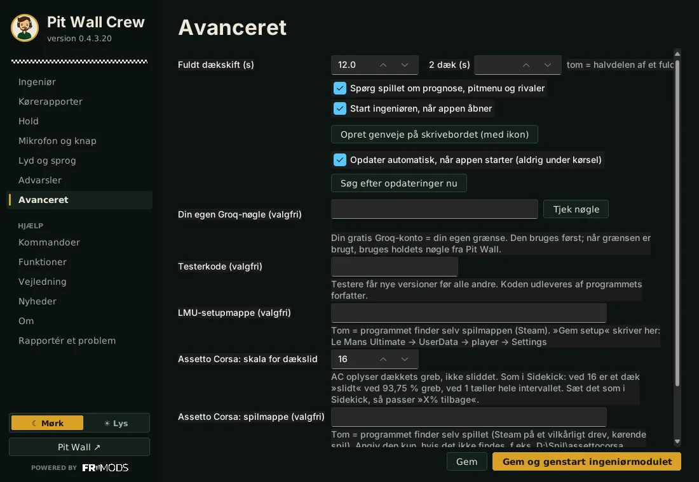
Tid for fuldt dækskift, automatisk start af ingeniøren, genveje, opdateringer og din egen Groq-nøgle (valgfri – din egen grænse), testerkode og »Spørg spillet om prognose, pitmenu og rivaler«. LMU-opsætningsmappe – som regel tom (programmet finder selv spillets mappe); »gem opsætningen« skriver den nye opsætning dertil.
Tal med ingeniøren
Hold knappen inde, tal, slip. Et tryk på knappen afbryder også det, ingeniøren siger. Eller uden at holde: under Mikrofon og knap → »Tal med ingeniøren« vælg »Kort tryk« og hvor mange sekunder der lyttes (mindst 2); et nyt tryk stopper lytningen, og et kort bip markerer slutningen; eller „Tryk, tal, tryk“ – lytter til næste tryk (højst 30 s).
Eksempler: »hvor meget brændstof?«, »hvornår går jeg i pit?«, »hvilke dæk skifter vi?«, »hvem er foran?«, »afstand til lederen?«, »hvem er først?«, »hvem er hurtigst?«, »hvem er P5?«, »tips til starten?«, »hvad kan jeg forbedre?«, »hvem er lige bag mig?« (nærmeste bil på banen, alle klasser), »uheld?«, »hvor taber jeg tid?«, »i hvilken sektor taber jeg mest?«, »hvordan kørte jeg den lilla sektor?«, »hvem er på banen?«, »hvordan er vejret?«, »hvornår overhaler den første hypercar mig?«, »stille« (helt stille til næste tryk), »kun det vigtige«, »gentag«.
Den fulde liste står i appen: Hjælp → Kommandoer – med søgefelt (skriv fx »brændstof«).
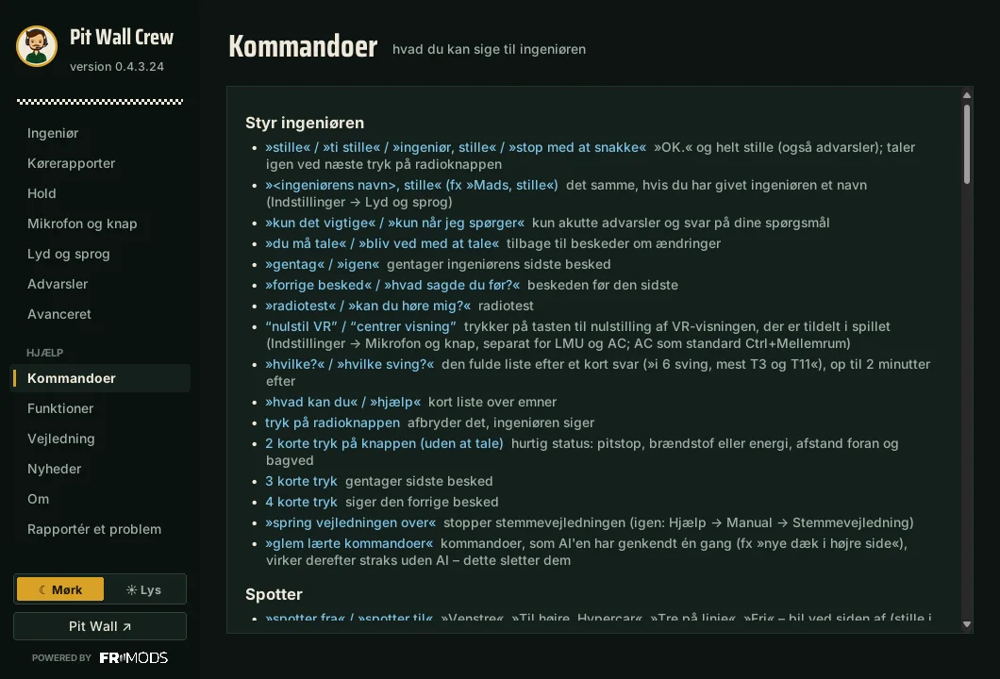
Ingeniøren advarer selv, når et dæk har været for varmt i et par omgange (én gang pr. stint): han nævner svingene, hvor den aksel glider mest, og hvad du skal ændre i kørslen, i træning også i garagen. Duel: »hold øje med Jensen« – efter hver af dine omgange afstanden, om du nærmer dig, og sektoren hvor rivalen vinder, og hvor du vinder; »stop med at holde øje« afslutter. Glemt kommandoerne? Spørg »hvilke kommandoer er der om rivaler?« (eller brændstof, pitstop, strategi, dæk, setup, vejr, hold) – ingeniøren nævner nogle, »videre« giver de næste; med Groq-nøgle også »hvordan spørger jeg, hvor en rival er hurtigere?«. Hvor en rival er hurtigere, sving for sving – uden navn: »hvor taber jeg til ham foran?«, »hvor er ham bagved hurtigere?« og, mens du holder øje, »hvor er han hurtigere?«. Spørg »hvordan varmer jeg fordækkene op?« eller »hvordan køler jeg bagdækkene?« – ingeniøren giver akslens temperatur i forhold til optimum, og hvad du skal ændre: i træning camber (alt efter hvilken kant der allerede er varmest), bremsekanaler, tryk og kørsel; i løb kun kørslen. Spørg »hvor på banen er Jensen?« – ingeniøren siger, i hvilket sving eller mellem hvilke sving den kører er lige nu. Spørg lige efter et sving »hvad skete der i T5?« (eller »hvad skete der i det sving?«) – ingeniøren sammenligner netop den gennemkørsel med din bedste omgang: tid, bremsning, fart midt i svinget, gas. Stemmenoter: »note: bagenden er nervøs på kantstenene« kommer i kørselsrapporten (kortet »Dine noter«) og dine noter for denne bane, og på et hold også i holdets hukommelse; »hvad er mine noter?« læser de tre seneste op. Uden Groq-nøgle virker alle kommandoer fra listen på dit sprog; har ingeniøren ikke et svar på dit sprog, siger han, at der skal en nøgle til.
Et spørgsmål, programmet ikke kender, går til AI'en (med Groq-nøgle) sammen med løbets data. Spørgsmål om selve programmet (»hvordan slår jeg advarsler om prototyper bagfra fra?«, »spotteren skal ikke sige siderne«) besvarer AI'en ud fra denne manual og indstillingerne: den giver kommandoen eller stedet i indstillingerne, og findes muligheden ikke, siger den det og foreslår den nærmeste. En kommando sagt med dine egne ord (»nye dæk i højre side«, »skriv til Patrik, at han skal stå op«) matcher AI'en med listen over alle kommandoer (også i demoen), og appen udfører den; næste gang virker den samme sætning straks uden AI (»glem lærte kommandoer« sletter dem). Ord, som talegenkendelsen hørte forkert, retter appen selv uden internet, og navnene på dine holdkammerater og nærliggende rivaler sendes med som hint til talegenkendelsen.
- Sådan taler ingeniøren: af sig selv taler han i hele sætninger, hver gang med lidt andre ord (samme indhold, uden at gentage den samme sætning igen og igen). Flere beskeder på én gang samler han i én, og forældede (f.eks. en afstand til en rival fra lige før) springer han over. En gang imellem reagerer han på det, der sker: din bedste omgang, tilbage i rytmen efter en fejl, stabil kørsel, en rival foran inden for angrebsafstand. Svar på spørgsmål er korte og lige til sagen.
- Korte tryk på knappen uden at tale: 1 – stille, 2 – hurtig status (pitstop, brændstof eller energi, afstande), 3 – gentag, 4 – forrige besked. Med stemmen: »gentag«, »forrige besked«.
- Har du travlt: tilføj et bandeord til spørgsmålet (fx »hvor meget fandens brændstof har jeg?«), så svarer ingeniøren mærkbart hurtigere.
- Pitmenu med stemmen: »ved pitstoppet energi 60 procent og højre dæk«, »indstil pitstoppet efter strategien«. Også »skift venstre dæk«, »nye dæk«, »bløde / medium / hårde dæk«, »tank 30 liter«, »tank 40 procent«, »intet brændstof«, »tank til slutningen«; hvis talen bliver hørt forkert, finder AI'en kommandoen. En holdkammerat kan gøre det fra Pit Wall: »Spørg ingeniøren«.
- Resten af pitmenuen: »dæktryk for 2 ned«, »venstre for 140«, »dæktryk fra data«, »reparer skaderne« (eller »reparer kun karrosseriet«, »reparer alt«), »skift bremserne«, »vinge 1 op«, »luk forreste bremsekøling«, »kølergitter 3«, »regndæk ved pitstoppet«, »kørerskift til Kamil«.
- Forslag om pitstop: 2 omgange før pitstoppet (og i regn) spørger ingeniøren »Jeg kan indstille pitstoppet: … Er det OK?« – »ja« indstiller pitmenuen.
- Stint-opsummering: efter et pitstop, kørerskift eller tilbagevenden til garagen (stints på 3+ omgange) ligger den fulde opsummering på appens side Kørerapporter (filen
recordings\stint_….txt, en kopi på Pit Wall): tempo, fejl (udforkørsler, sammenstød, gentagne blokeringer, hjulspin, ABS, TC – i hvilke sving), hvor du taber tid i forhold til din bedste omgang og i den fulde version også grebsudnyttelse i svingene og opsætning. Under et stint: »stint-opsummering«. Nuværende stint (live) i rapportlisten opdateres efter hver ren omgang (fra 3 omgange); Afslut rapport gemmer den som en almindelig rapport (fx ved slutningen af træningen), og ingeniøren kører videre. Rapporten er opdelt i kort: vigtigste tal, 3 ting til næste stint, sving for sving (indgang / midte / udgang: OK, PS – fronten glider, NS – bagenden glider; OPSÆTNING eller KØRSEL) med banekort – hold musen over et sving, så lyser det op på kortet, og en prik kører igennem; »Fold ud« viser udnyttet greb i hver fase med råd (hurtigere ind, mere gas eller ved grænsen); en chikane er ét punkt; har bilen samme problem i de fleste sving, siger én sætning over listen det; nedenfor: brændstof (hver omgang), dæk (slid, temperaturer, tryk) samt »Ændr i opsætningen« / »Forbedr i kørslen«; under »Næste stint« kortet Siden sidst – sammenligning med din forrige rapport på denne bane i denne bil (bedste omgang, konsistens, udforkørsler, bilproblemer der kom igen eller forsvandt, dæk- og brændstofforbrug); nederst Spørg om denne rapport – skriv et spørgsmål, og ingeniøren svarer ud fra rapportens data (ingeniøren kører og Groq-nøgle; med stemmen efter kørslen: »hvad siger rapporten?«), og Sammenlign med holdet (i kortet Siden sidst vælger du turen at sammenligne med: forrige, bedste eller en fra listen; over rapporten et filter bane og bil og Slet rapport; en rapport gemt på et andet sprog viser sine råd på programmets sprog) – knappen åbner Pit Wall på fanen Omgange (sammenligningskort med en holdkammerat). Kopiér rapport kopierer rapporten til at indsætte (fx på Discord). Knappen Hvordan laves en rapport? forklarer i et par trin, hvor data kommer fra (fejl og tab pr. sving tæller efter 3 jævne, rene omgange). Gennemsnitsforbruget udelader stintens første omgang (udkørselsomgangen); kan slås fra under brændstofgrafen. - Historik over opsætningsændringer: efter »jeg har ændret …« og 3 rene omgange vurderer ingeniøren ændringen (hjalp / værre / ingen ændring) og husker den for banen og bilen; hvert opsætningstip nævner også sin bivirkning. I LMU og i Assetto Corsa (med CSP og appen i spillet) ser ingeniøren selv ændringen i garagen (hvad og hvor mange klik), også uden »jeg har ændret«. Hvis en ændring ikke gjorde nogen forskel, foreslår han samme retning kraftigere (f.eks. »fra 8 til 9 gjorde ingen forskel, prøv 11«); vinge og frihøjde kun ét klik længere. Hjælper det heller ikke, siger han, at bilen ikke reagerer på det på denne bane, og foreslår det ikke mere. Ved ujævne tider beder han om 1–2 omgange mere. Hvis en ændring gjorde det værre, siger han præcist, hvad du skal tilbage til (»forreste krængningsstabilisator: tilbage til 10«, i AC: hvor mange klik). Var forholdene før og efter ændringen forskellige (varmere bane, mindre brændstof, slidte dæk, anden blanding, våd bane), siger han det, og at vurderingen er mindre sikker.
- Greb i svingene (fuld version): »greb?«, »hvor har jeg margin?«, »greb T5« – hvor tæt du er på dækkets grænse ved indgangen, midt i svinget og ved udgangen (100% = det mest, du har vist i det sving), og hvad du skal gøre, hvor der er margin. LMU og Assetto Corsa.
- Opsætning eller kørestil: før ingeniøren foreslår en ændring i opsætningen, tjekker han 4–8 rene omgange: er problemet der hver gang (bilen – opsætningsråd) eller kun, når du kører anderledes, fx hurtigere indgang eller tidligere gas (kørsel – kørselsråd)? Opsætningsråd tager også højde for forholdene (kolde eller slidte dæk, brændstof, banetemperatur), dæktryk, ændringens bivirkning og sessionstypen; er det værre efter 3 omgange, så gå tilbage. Hvert setup-råd givet under kørslen står også i kørerapporten (med omgangsnummer).
- Sammenstød, motor, aero, vind: efter et sammenstød siger ingeniøren, hvor du blev ramt (»Sammenstød bagpå«, i LMU og AC), og »skader?« oplyser også, hvor seneste sammenstød var. I LMU-hybrider holder han øje med elmotoren (advarer, når den tydeligt bliver varmere; »motor?« oplyser dens temperatur). »Aero?« (LMU) – balancen i downforce for/bag ved forskellige hastigheder, downforce og luftmodstand. »Hvordan er vinden?« – vindhastighed (i LMU også modvind / medvind / sidevind); »hvordan er vejret?« nævner også skyer og vind.
- Opsætning: »opsummer tipsene« – alle foreslåede ændringer på én gang; »gem opsætningen« – en ny fil »PWC_…« med de ændringer i banens mappe (originalen ændres ikke), indlæs den i garagen.
Assetto Corsa
Pit Wall Crew virker også med Assetto Corsa (AC1, Steam). Det er det samme program – samme ingeniør, spotter, Pit Wall og holddatabase; programmet genkender selv, hvilket spil der kører.
- Custom Shaders Patch (CSP) – stærkt anbefalet (Content Manager → Settings → Custom Shaders Patch). Med CSP får du mest muligt: regn og vandpytter (Rain FX), pitstop med stemmen, analyse af under- og overstyring i svingene, sektorer, råd om TC og ABS. Uden CSP kører en enklere Python-app – med færre funktioner.
- App i spillet – programmet kopierer den selv ind i spillet. Start Pit Wall Crew før Assetto Corsa; med CSP kører appen selv i baggrunden. Uden CSP aktiverer du den én gang: Content Manager → Settings → Assetto Corsa → Python apps → sæt flueben ved Pit Wall Crew.
- Spillet på et andet drev – programmet finder det selv. Hvis ikke, angiv spillets mappe (den med
AssettoCorsa.exe) under Indstillinger → Avanceret → Assetto Corsa: spillets mappe. - Dæk – »X% tilbage« som i Sidekick; indstil samme skala som i Sidekick under Indstillinger → Avanceret → Assetto Corsa: dækslidskala. Ingeniøren advarer cirka 3 omgange før »cliffen« (pludseligt fald i greb). Din egen grænse pr. bil: »med denne bil skifter jeg dæk ved 97« – en advarsel 2 omgange før.
- Pitstop med stemmen (med CSP) – ingeniøren indstiller spillets hurtige pitmenu: »fyld op«, »regndæk ved pitstoppet«, »dæktryk for 18«, »ingen reparationer«. I AC skiftes altid hele dæksættet.
- Dæktryk, gear, opsætning – »hvilke dæktryk skal jeg køre med?« giver kolde tryk til garagen (psi); i træning siger »opsummer tipsene« ændringer i gearudvekslingen i klik (»forlæng sjette gear 3 klik«); »gem opsætningen« – en ny fil »PWC_…« i garagen (originalen ændres ikke).
- Skæringer (RealPenalty) – online fortæller ingeniøren om hver advarsel for at skære, som serveren tæller dem; »hvor mange advarsler har jeg?«.
- Svingnavne fra banen (»Tosa«, »Acque Minerali«) i stedet for T1, T2 – du kan spørge med navnet: »hvordan er Tosa?«.
- Spotter, rivaler, flag, skader, strategi – som i LMU.
- Det AC ikke har: kørerskift (programmet kører altid i solo-stil – ingen overlevering af bilen eller briefinger), virtuel energi, kølergitter og bremsekøling – ingeniøren taler ikke om dem.
- Pit Wall virker som i LMU. Flere biler fra ét hold i et løb – hver har sin egen visning (liste øverst).
AI – gratis Groq-nøgle (én gang, 3 minutter)
- Gå til console.groq.com og log ind – nemmest med en Google-konto. Kontoen er gratis.
- Til venstre: API Keys → Create API Key, skriv et navn (fx
PWC) → Submit. - Kopiér nøglen med det samme (den starter med
gsk_) – Groq viser den kun én gang. Nøglen er gratis med en daglig grænse. - Hold (én person er nok): Pit Wall → Hold → Holdets AI (Groq) → indsæt → Gem nøgle. Nøglen når ud til hele holdet, og kun holdets medlemmer kan se den.
- Kører du alene eller vil have din egen grænse: app → Avanceret → Din Groq-nøgle → indsæt → Tjek nøgle (der skal stå »✓ Nøglen virker«) → Gem og genstart ingeniørmodulet. Boksen AI (Groq) over feltet har en knap Hvordan får jeg en nøgle? ↗ (åbner dette kapitel) og forsvinder, når nøglen virker.
- Færdig, når siden Ingeniør viser AI: Groq i grønt.
Send aldrig nøglen i en chat – indsæt den selv.
Opdateringer og Patreon
- Nye versioner går til betalende patrons af FR Mods på Patreon.
- I appen, på siden Ingeniør klik Log ind med Patreon. Log ind på Patreon i browseren og klik Allow, gå derefter tilbage til appen. Kun knappen Log ud af Patreon er tilbage.
- Opdateringer installerer sig selv, når appen starter – aldrig mens du kører. Dine indstillinger bliver.
- Testere skriver i stedet en kode fra forfatteren: Avanceret → Testerkode → Gem og genstart ingeniørmodulet.
Uden Patreon eller testerkode virker programmet videre, bare uden nye versioner.
Fuld version og demo
- Den fulde version virker, når den er aktiveret på en computer: login med Patreon (eller en testerkode) aktiverer den selv, på op til 2 computere pr. konto. Når den først er aktiveret, virker den for altid, også når din støtte ophører – bare uden nye versioner. En kopieret mappe uden login virker som demo.
- Demo (gratis): samtale med stemmen, flag, straffe, banegrænser, overhalinger, brændstof, energi, hvornår du skal i pit, tid til slut, omgangstider, placering, hvem der er foran og bagved, dæk, bremser, skader, motor, vejr, plus spotteren, »hvor taber jeg tid?« (svinget med det største tab), ubegrænsede AI-spørgsmål (med en gratis Groq-nøgle) og kørerapporter med et smugkig på, hvad den fulde version ville vise (opsætning, greb). Ingen Pit Wall, hold, indstilling af pitmenuen, strategi, opsætning eller fuld køreanalyse.
- Siden ★ Fuld version viser alle betalte funktioner med skærmbilleder fra Pit Wall. Bliv patron åbner FR Mods' side på Patreon (også i bjælken på siden Ingeniør). Når en patron logger ind, henter appen selv den fulde version – indstillingerne bliver.
- Engang imellem nævner ingeniøren kort den fulde version. Slå det fra under Advarsler → Nævn funktioner i den fulde version eller sig »ingen reklamer«.
Pit Wall
Åbn den med knappen Pit Wall i appen eller på zepansrpl-creator.github.io/Pit-Wall-Crew (log ind med holdets kode og adgangskode; telefonen husker dem). Knappen i appen logger selv Pit Wall ind – til det hold, appen er forbundet til, også hvis browseren var logget ind på et andet hold. Sprogvælgeren er øverst, og knappen ☀ / ☾ skifter mellem lyst og mørkt udseende.
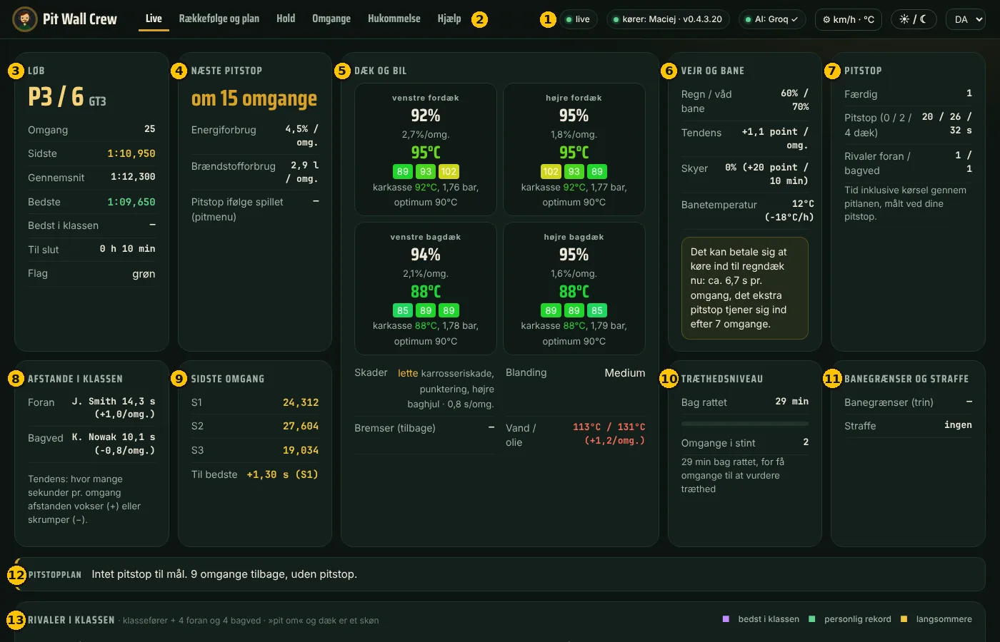
- Status: om data er live, hvem der kører, om AI'en virker.
- Faner: Live, Rækkefølge og plan, Hold, Omgange (øverst en sessionsopsummering: bedste og gennemsnitlige omgang, stabilitet, brændstof og energi pr. omgang – for hver kører og stint), Hukommelse, Hjælp.
- Løb: placering i klassen, omgang, omgangstider, tid til slut, flag.
- Næste pitstop: om hvor mange omgange, energi- og brændstofforbrug, hvad der skal ske ved pitstoppet.
- Dæk og bil: slid og temperaturer på hvert dæk, skader, motor, bremser.
- Vejr og bane: regn, våd bane, skyer, banetemperatur og ingeniørens bemærkninger.
- Pitstop: hvor mange pitstop der er kørt, pitstoptiden (0 / 2 / 4 dæk) målt på jeres egne pitstop, og hvor mange pitstop rivalerne foran og bagved har kørt.
- Afstande i klassen: afstanden til bilen foran og bagved samt tendensen (hvor mange sekunder pr. omgang den vokser eller skrumper).
- Sidste omgang: sektortider S1–S3 og forskellen til den bedste omgang.
- Træthedsniveau: hvor længe køreren har kørt, og hvor mange omgange i stintet; træthed vurderes ud fra omgangstiderne.
- Banegrænser og straffe: overskridelser af banegrænser og straffe.
- Pitstopplan: hvad der skal gøres ved næste pitstop, eller om I når i mål uden pitstop.
- Rivaler i klassen: afstande, tempo, hvem der indhenter hvem, energi, forventet pitstop.
- Sammenligning med holdkammerater: efter hver ren omgang – i hvilke sving og hvor meget en holdkammerat er hurtigere (hans bedste omgang under lignende forhold). I Assetto Corsa også en holdkammerat i en anden bil i samme klasse – så kun hvor og hvor meget, uden råd.
- Stint-rækkefølge: hvem der kører, hvornår skiftet er, hvad der sker ved pitstoppet, hvor mange minutter rækkefølgen har flyttet sig i forhold til planen. Uden plan for i dag laves den automatisk for den aktuelle kører – ud fra løbets længde og de dæk, der er til rådighed i spillet.
- Udseende: mørkt tema som standard, ☀/☾-knap øverst. Farvede tider: lilla – bedst i klassen, grøn – din bedste, gul – langsommere. Bjælken »Skader« under kortet vises kun, når bilen er skadet (bilskitse, tab pr. omgang, topfart, hvor lang tid en reparation kan tage og råd). I et løb med fast antal omgange viser »Til slut« omgange (fx 12 / 40).
- Holdets stifter: har sin egen adgangskode (sat ved oprettelse af holdet eller på fanen Hold: »Bliv stifter«). Kun stifteren kan fjerne eller omdøbe kørere og ændre holdets adgangskode; han logger ind på Pit Wall med »Jeg er stifteren« afkrydset.
- Flere af holdets biler i ét løb: hver bil har sin egen visning (liste øverst, med bilens nummer); beskeder og spørgsmål går til køreren i den valgte bil. Hver kører hører sin egen ingeniør og spotter.
- Live-rækkefølge: en stint-bjælke (farve = kører, rødt »NU«). Omgange: filtre (session – hvert løb for sig; bil – når flere af holdets biler kører, får hver sin tabel; kører, stint, kun rene), en tempograf, farvede tider og sektorer S1–S3. Sammenligningskort: bane og bil, op til 3 omgange fra listen (🟢 kørerens bedste gyldige omgang – på banen og i hver session; sessioner foldet sammen; filtre; knappen »🟢 Bedste omgange«). I holdets database: omgange fra 14 dage, bedste under forhold (indtil slået eller 90 dage) og 📌 (uden grænse); ældre 💾 – fra kørerens disk, når hans Pit Wall Crew kører. Kort: farve = hvem der er hurtigst, bremsepunkter, sektorgrænser og -tider, værdier ved mouseover, zoom; forhold (også gummi på banen), »hvor der er mest at hente«, ideel omgang, graf for hastighed / gas / bremse / gear og tidstab; klik på et sving – kortet ved siden af svingdetaljerne, og »+ T3« / »− T3« samler sving i en sektion for at sammenligne hele sektionen; forskelle i opsætningen; »🔗 Kopiér link«. ⚙ Enheder i toppen (km/h–mph, m–ft, bar–psi–kPa, °C–°F, l–gal). Hukommelse: noter som kort med søgning og banefilter. Hjælp: en indholdsfortegnelse.
Længere nede er banekortet med alle biler og holdradioen: »Til køreren« (ingeniøren læser beskeden op), »Spørg ingeniøren« (svar med stemmen), »Spørg (kun tekst)«, »Til hukommelsen«.
På telefonen
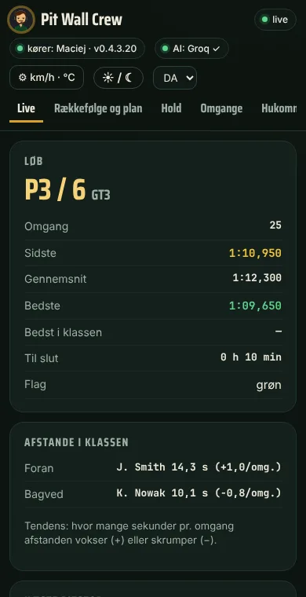
Fanen Hold
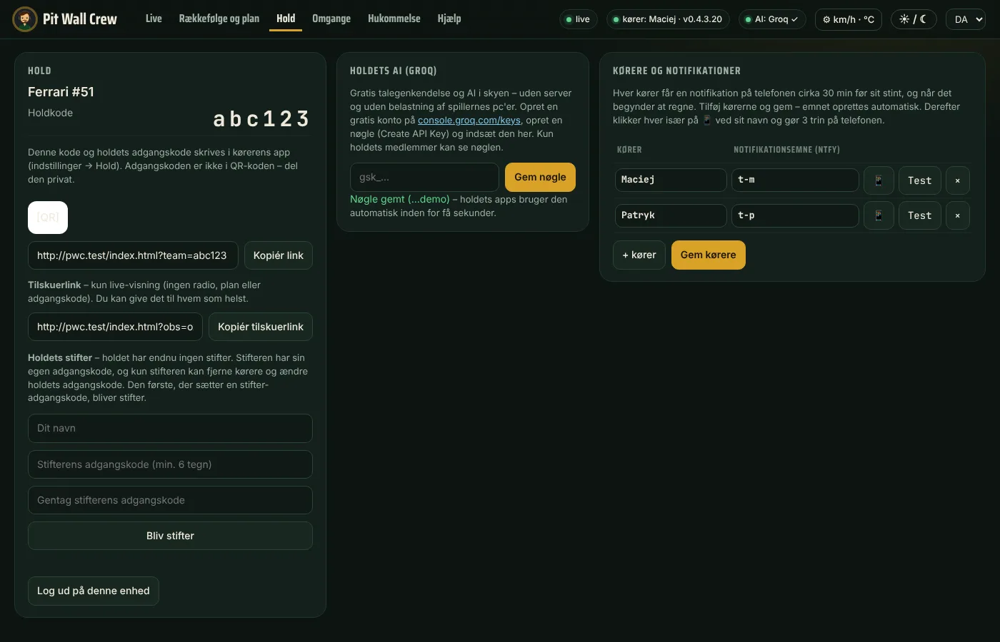
Holdkode og QR-kode til muren, kørere med notifikationsemner, Groq-nøglen og et tilskuerlink –
kun live-visningen, uden radio og uden plan; du kan give det til hvem som helst. Når flere af holdets biler er på banen (fx Assetto Corsa), vælger tilskueren, hvilken bil han vil se, i listen øverst (kører – bil). Valget står i adressen (&auto=…), så du kan dele et link til en bestemt bil.
Rækkefølge og plan (før et langt løb, én person)
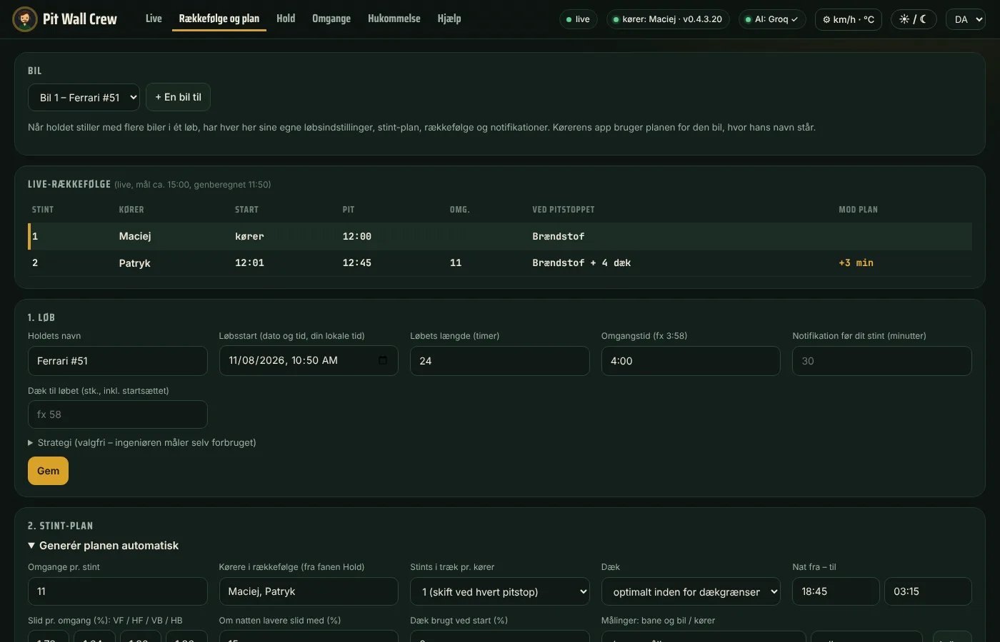
- Bil (øverst): når holdet stiller med flere biler i ét løb, + En bil til – hver har sine egne løbsindstillinger, stint-plan, rækkefølge og notifikationer. Kørerens app bruger planen for den bil, hvor hans navn står.
- 1. Løb: startdato og -tid, længde, omgangstid, dæk til løbet → Gem.
- Kørernes tilgængelighed: klik på en time – tilgængelig → i nødstilfælde → ikke tilgængelig (timer i din tidszone; alle kan markere deres egne). Den automatiske plan springer utilgængelige kørere over, og i tabellen får en kører i en utilgængelig time en rød ramme.
- 2. Stint-plan → Generér planen automatisk: omgange pr. stint, kørerrækkefølge, dækslid (under Målinger vælg bane, bil og kører – Indlæs udfylder dækslid og tider for hele pitstop målt i dine sessioner), pitstoptider, Dæk brugt ved start (%) – når du starter på kvalifikationssættet → Generér plan. Programmet fordeler dækkene, så de slides så jævnt som muligt.
- Ret tabellen om nødvendigt: kører fra listen, omgange, Venstre / Højre = skift dækkene i den side → Gem plan. Tælleren viser, om du holder dig inden for dæktildelingen.
Under løbet genberegnes rækkefølgen selv ud fra det faktiske tempo. Ingeniøren går i pit og skifter dæk efter planen (medmindre et dæk ikke holder, eller energien ikke rækker). Planen gælder for et løb med den længde, der er indtastet under »1. Løb«.
Notifikationer på telefonen (hver kører, 2 minutter)
- Installer den gratis app ntfy (Google Play / App Store).
- På Pit Wall: Hold → klik 📱 ved dit navn – dit emne og QR-koden vises.
- I ntfy tryk på +, skriv emnet og Subscribe (eller scan QR-koden).
- Klik Test ved dit navn – »Pit Wall Crew – test« kommer på telefonen.
Notifikationen kommer cirka 30 minutter før dit stint, endnu en hvis stintet flytter sig 10 minutter eller mere, og når det begynder at regne. Køreren kan også skrive til hele holdet med stemmen: »send en besked til holdet: jeg kører ind denne omgang« (eller til én person: »notifikation på telefonen til Adam: …«).
Langt løb (fx 24 t)
- Køreren i bilen har Pit Wall Crew kørende hele stintet – hans app sender data til muren og notifikationerne.
- De andre kan slukke spillet, appen og pc'en. Efter notifikationen på telefonen starter du pc'en, LMU og Pit Wall Crew, før du sætter dig i bilen.
- Planen, rækkefølgen, beskederne, holdets hukommelse og briefingen ved skiftet ligger i holdets database – programmet henter dem selv.
Generalprøve før løbet (15 minutter)
- Alle starter Pit Wall Crew – Hold og AI: Groq i grønt.
- Én kører klikker Test uden spil. De andre åbner Pit Wall – data skal være »live«.
- Køreren spørger med stemmen »hvor meget brændstof?« – alle hører svaret.
- Send »Til køreren« fra muren – ingeniøren læser beskeden op.
Fair share (LMU)
I holdevents skal hver kører, der har gennemført mindst én omgang, have mindst 50% / antal kørere af holdets omgange (2 kørere – 25%, 3 – 16,7%, 4 – 12,5%, 5 – 10%, 6 – 8,3%), ellers får hele holdet ingen DR/SR. Ingeniøren tæller hver kørers omgange, minder ved pitstop om, hvor mange hver mangler, advarer når det bliver stramt og svarer på »fair share?«. På Pit Wall – fanen Live.
Løbsopsummering
Ved målstregen siger ingeniøren kort resultatet og sammenligner det med startpositionen: ros for vundne pladser, opmuntring efter tabte (sammenstød og straffe tages i betragtning). Den fulde opsummering (resultat, pitstop, fair share, dit tempo og din stabilitet, udforkørsler, forbrug) ligger i appens vindue, på Pit Wall og i recordings\podsumowanie_….txt.
Når noget ikke virker
| Symptom | Hvad du gør |
|---|---|
| »Venter på LMU«, selvom spillet kører | LMU: Settings → Gameplay → Enable Plugins = ON, genstart derefter spillet. |
| Ingeniøren kan ikke høre mig / »Jeg kan ikke høre dig« | Mikrofon og knap → Test 3 s. Tjek lydløs på headsettet og Windows → Beskyttelse af personlige oplysninger → Mikrofon. |
| Headset tændt efter programmets start | Ingeniøren skifter selv fra laptopens mikrofon til mikrofonen fra indstillingerne (inden for få sekunder). |
| »Forkert holdkode eller adgangskode« | Hold → ret det → Forbind til holdet → Gem. |
| Jeg har glemt holdets kode eller adgangskode | Kode: fanen Hold på Pit Wall hos en, der er logget ind (eller holdlisten i appen og på siden). Adgangskode: stifteren kender den, og det gør alle, der har skrevet den i appen. En ny adgangskode til holdet sætter stifteren: Pit Wall med »Jeg er stifteren« afkrydset → Hold → Skift holdets adgangskode; husker han den heller ikke – »Bed forfatteren om en ny adgangskode« og Hjælp → Rapportér et problem med holdkoden. |
| Pit Wall: »ingen data fra spillet« | Kørerens app skal køre med »Hold« i grønt. |
| »AI: Groq – forkert nøgle« | Indsæt nøglen igen (Pit Wall → Hold → Holdets AI). |
| »Groqs grænse pr. minut« / »daglig AI-grænse« | En gratis nøgle har en grænse pr. minut og pr. dag; hele holdet deler holdets nøgle – din egen nøgle (Avanceret) har sin egen grænse. |
| Hver besked høres to gange | Programmet kører to gange: luk appen, afslut »pythonw« i Jobliste, og start det én gang. |
| Ingen notifikationer | Løbsstart og kørere i planen, emne i ntfy, knappen Test; appen kørende på nogens pc. |
| Spillet hakker | Som regel for lidt grafikhukommelse: sænk teksturer, færre synlige biler og skygger, luk andre programmer. |
| »Windows beskyttede din pc« ved installation | Installationsprogrammet har endnu ingen digital signatur. Klik Flere oplysninger → Kør alligevel. |
| Windows 11 blokerer installationsprogrammet uden »Kør alligevel« | »Smart App Control« er slået til og tillader ikke programmer uden digital signatur. Du kan slå det fra (Windows-sikkerhed → App- og browserkontrol), men Windows lader dig ikke slå det til igen bagefter. |
| AVG eller Avast analyserer installationsprogrammet (»CyberCapture«) | Antivirusprogrammet tjekker en ny fil uden digital signatur i skyen. Vent på resultatet, eller klik Åbn alligevel. |
| »Jeg forstod det ikke«, ingeniørens stemme falder ud, beskederne siger »Dit antivirus (Avast/AVG) blokerer…« | Avast/AVG blokerer appens forbindelser. Avast/AVG → Menu → Indstillinger → Generelt → Undtagelser → Tilføj undtagelse → mappen Dokumenter\Pit Wall Crew, og genstart så appen. |
Rapportér et problem eller et forslag
I appen: Hjælp → Rapportér et problem, på Pit Wall: fanen Hjælp. Det går direkte til forfatteren. Under kørsel sig »rapportér en fejl: …« (fx »rapportér en fejl: spotteren sagde venstre, men der var ingen«) – appen tilføjer dit sted på banen, omgangen og ingeniørens sidste beskeder; kun »rapportér en fejl« – ingeniøren spørger, hvad der skete. Med dit samtykke kan appen automatisk sende en rapport, når den går ned (ingen stemmeoptagelser, nøgler eller adgangskoder) – det slår du til og fra på samme side. Dér kan du også slå den anonyme brugertæller fra (et tilfældigt installationsnummer, version og sprog – ingen navne eller spildata), statistikken over brug af funktioner (funktionsnavne, antal og opstartstid – aldrig hvad du spurgte om) og de sætninger, AI'en har matchet med kommandoer (uden navne – de mest almindelige føjes til appen for alle). Opdateringer henter kun de ændrede filer, når du har den forrige version. Separat kan du slå afsendelse af spørgsmål fra, som ingeniøren ikke forstod (kun teksten, uden navne – forfatteren tilføjer manglende kommandoer). Detaljer: Privatliv.
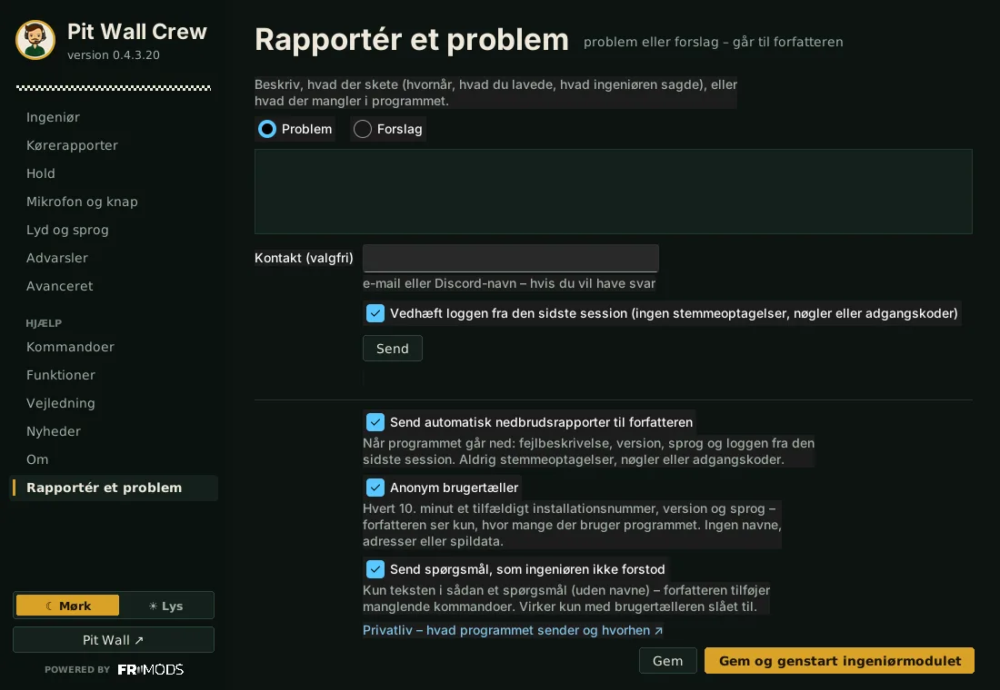